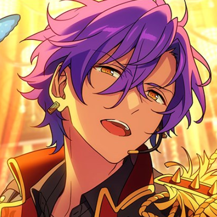

Minhas redes sociais
Quem sou eu?

Meu nome é Paola Beatriz, sou formada em Design Gráfico pela Universidade de Brasília, e atualmente estou fazendo uma graduação em Análise de Sistemas. Gosto muito de jogos josei muke, minha obsessão no momento é Ensemble Stars (Como podem ver com o icon do Adonis), porém Twisted Wonderland ainda segue no meu coração.
Como falar comigo?
Aqui embaixo estão listadas as minhas redes sociais: